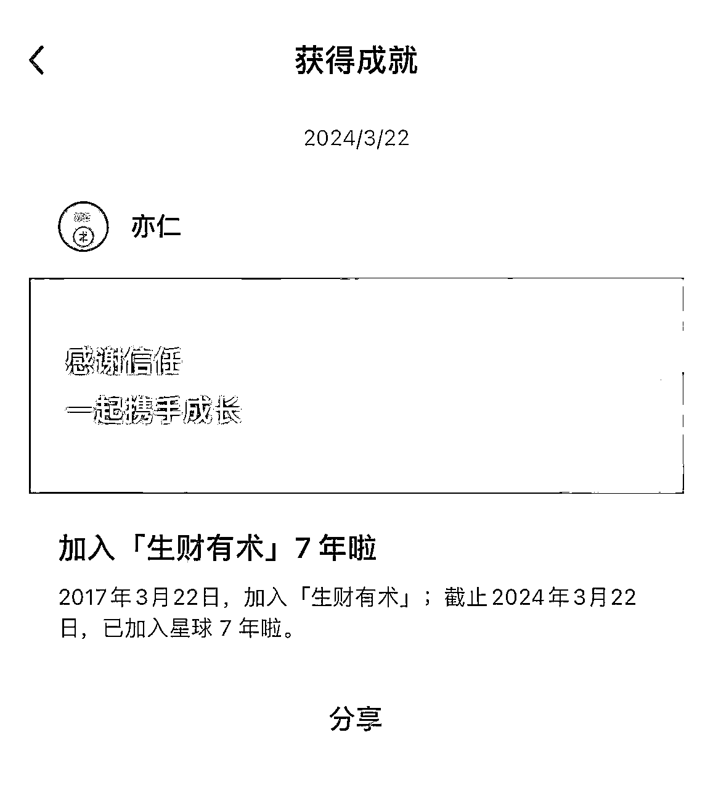
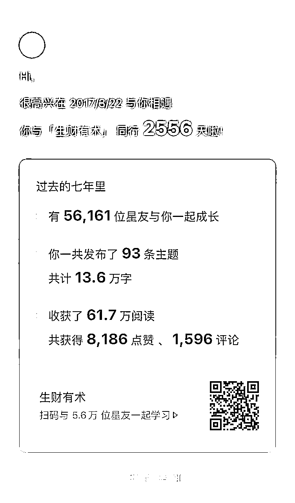
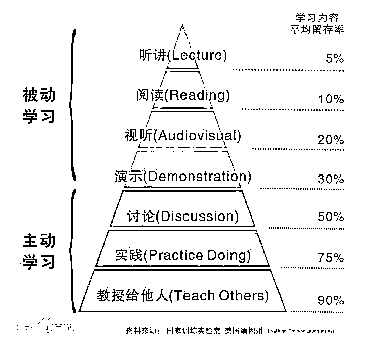

来源：https://pznme756ly.feishu.cn/docx/JYQPdG2MKorfANxbnsqcfBPLn9b
各位圈友好，我是明白，生财有术 7 期老圈友，星球编号 20。
今天是 3 月 22 日，等会晚上要去参加生财见面会的嘉宾晚宴，刚刚知识星球给我推送了一个消息，原来今天是我加入生财有术 7 周年。
李笑来老师说，7 年就是一辈子，今天还挺有纪念意义的哈哈。


回到正题 ——
可能大部分圈友对我的第一个印象是：晚 9 点半睡觉。
第二印象是：一直在日更公众号，今天是第 1339 天。
我最近才发现，虽然我在写作方面有很多实战经验，也拿到了一些结果。但我在星球的 24 篇精华，竟然没有一篇是关于写作的，这多少有点不合理！
所以，今天我想要从一个 99% 的人都很少关注的视角，来分享一点，我对于「写作和赚钱之间的关系」的思考。
相信看完你会对写作这件事，有不一样的认识。
文章大纲 ——
我是程序员出身，之前从来没有写作经验，在职场上班的时候，看到有同事写技术博客，还会嗤之以鼻：又想要出风头。
2020 年 5 月份，我想通了一些事情，开始认真练习写作，并且做了一个决定：日更公众号。
到今天为止，日更公众号 1600+ 天，我也确实获得了一些结果 ——
1 写作效率：从一开始的磕磕绊绊，4、5 个小时才能憋出一篇 1000 字文章。到现在每天 10-30 分钟就能完成一篇 1000 -2000 字文章。
2 文章质量：原来的文章，主题模糊，逻辑混乱，看到别人写什么就写什么。现在，每篇文章都有自己的思考，从分享数、收藏数来看，对读者也有更大价值。也被很多大佬推荐、转发。还在一个细分领域里，写出一篇 10w+（不是靠系统推荐，而是大家来转载、转发），还帮生财日历写过一篇投放软文，效果也不错。
3 写作系统：原来写文章，无论是定话题，还是搭框架，都是凭感觉。现在，建立了一套自己的写作系统，能做到持续高质量输出。
4 收入方面：我通过广告、带货、卖自己的课程、社群，也变现了 7 位数。一个有里程碑的事件：2021 年 418 生财有术拉新，我靠日更公众号，当天一共邀请了 468 位朋友加入生财，排名第一。涛哥、曹大、张哥、粥左罗老师的课程等，多个产品的分销，我都是第一。
5 其他方面，比如公众号关注数、个人能力、知识、思维、心态，影响力方面等，也都有很大提升。
先问一个问题，我们练习写作，目的是什么？
可能一些圈友会脱口而出：为了赚钱。
因为我们身边有不少人通过写作，公众号涨了粉丝，然后接广告，赚到了钱。有的甚至年入百万、千万。于是，我们也想模仿他们，通过这种方式来赚钱。
而且，最近几年新媒体比较火，市面上会有大量的写作方面的产品，都是以赚钱为卖点，吸引用户付费。通常情况，这些产品还会拿出一些成功案例，说某个学员，听了他们的课，很快就涨了 XX 万粉丝，然后赚到钱了。
更重要的是，很多写作课都会有一个「0 基础，XX 天就能精通」的卖点。
于是，我们看的多了也会被影响，觉得通过写作赚钱很容易，于是就想去学写作。
坦白的讲，为了赚钱而去学习写作，没什么不对，也没什么可丢脸的。我最早开始写作，也是这么想的哈哈
但这里会引出另一个问题：普通人真的能靠写作，快速涨粉，然后赚到钱吗？
这个问题我们先放一放，看另一个问题 ——
为什么一些很厉害的人，比如亦仁、曹大、冯大、池大等，都经常建议大家多写作，难道他们指的是：让我们去写作，然后涨粉接广告赚钱吗？
虽然有事实能证明，写作确实可以涨粉、赚钱。但很明显，大佬们说建议我们多写作，一定不是出于这个考虑。
那是因为什么？
写作是否还有一些「其他好处」，是我们没考虑到的。
甚至说，这些「其他好处」比涨粉、赚钱更重要。
更进一步，这些「其他好处」，不止是比涨粉、赚钱更重要，甚至是涨粉、赚钱的必要条件。
搞清楚这个答案，其实也不难。
我们可以研究一下，
那些经常写作、并且做出成绩的高手，他们身上有哪些共同的能力？
然后思考一下，这些共同能力，是不是做成事（赚钱）的必须能力？
如果是的话，再思考一下，写作是否能帮我们锻炼出这些能力？
如果是的话，那就说明，大佬们建议我们多写作，更有可能就是为了让我们锻炼这些能力。
因为具备这些能力的人，做事成功概率更大，自然赚到钱的概率就越大。
这个问题我在日更之前，专门花了一个月时间深入研究过，确实有一些答案。
一个人能赚钱，是因为他满足了用户需求，然后创造了价值。
而创造价值的核心，是能力。
所以，无论什么情况下，我们把握住这个核心，不断提升自己的能力，就能不断创造更多价值，自然就能赚到更多钱。
那该提升哪些能力？
其实，做不同的赚钱事情，需要的能力不一样。
比如 ——
🌀 做淘宝客，需要会引流、会沟通、能研究清楚平台规则等。
🌀 做新媒体，需要会写作、会运营、懂产品、会销售等。
🌀 做知乎好物，需要会写作，会选品，会数据分析等。
这些能力，属于细分能力，也就是做不同事情，就需要去根据业务来变通。
在这些能力之下，还需要 4 个基础能力 ——
我们常说的写作、文案、沟通、营销、引流、数据分析等赚钱需要的能力，都是根据这 4 个基础能力，拓展出来的细分能力。
基础能力优秀的人，无论做任何事情，都能根据具体场景，快速拓展出细分能力，做好这些事情。这类人就像一个变形金刚，无论是陆地、天空、海洋、沼泽、沙漠，它都可以进化出不同的形态，来很好的应对。
而基础能力不行的人，他是无法拓展出细分能力的。这时候，他做成任何事情的难度，都会很大。
比如，之前我有一个朋友，他写文章能力不错，但他做知乎好物就没成功，他说是因为自己不会选品，或者对平台不熟悉。
其实是他基础能力不行，所以他无法根据场景来变通出细分能力。
所以，当我们锻炼出这 4 种能力，就更容易找到用户需求，做出解决方案，然后赚到钱。而且，这 4 种能力都具备复利效应，也就是积累的越久，这些能力就会越强，就能帮我们建立一个长期稳定的赚钱系统。
我今天聊的写作，就是一件能帮我们同时锻炼这 4 种能力的事情。
而且，对普通人而言，写作是积累这 4 种能力成本最低、最方便、最高效的手段。
我想，这应该就是大佬们经常鼓励我们写作的核心原因。
下面就具体分析一下，为什么这 4 种能力很重要，以及写作如何帮我们锻炼这些能力。
什么是学习能力？
我们无论做任何事情，都会遇到未知、或者不懂的东西，这时候就需要自己从 0 到 1 学会、搞懂它，这样才能继续下一步。
而且，即便是我们在熟悉的领域中做事，也难免会碰到一些奇怪的问题、障碍，这时候也需要自己去学习、搜索、研究，解决掉问题，才能继续下一步。
更常见的，我们按照别人教程、方法，也一定会碰到问题。因为世界上没有两个完全相同的人。不同人的知识积累不同， 性格不同，能力不同， 实际环境不同，……
🌀 同样一个知识，不同人可能会有不同的理解；
🌀 同样一个步骤，不同人做可能会有不同的结果；
🌀 同样一个点子，不同人可能会想到不同的方向。
这就导致，同样一个方法，不同人会遇到不同的问题。
这些问题，都需要我们通过学习、研究、摸索，解决掉，才能把这个方法用到实践中。
如果学习能力不够，任何方法、技巧，对我们来说都只是知道，无法做到。
比如，我有一个朋友，他写文章能力不错，但他做知乎好物就没成功，他说是因为自己不会选品，不懂平台规则等。但其实，这是因为他学习能力不足。所以遇到新的业务，他没法快速学会，上手。
总之，一个人学习能力不够，做任何事情都会寸步难行。
所以，我们要重点提升自己的学习能力。
而写作，就是提升学习能力最有效的手段。
为什么？
来看一个图片——

这是一个学习金字塔，也是大家常听到的费曼学习法。
从图片能看出，我们平时最常用的听课、读书，学习效果是最差的，而教授给他人的学习效果是最好的。
你可能也听过这句话：教是最好的学。
也就是，我们如果想更快学会一个知识，最好的方式，是把它教给别人，如果别人听懂了，那说明你真的理解、吸收了这个知识。
而写作，就是这样一个过程。比如，
我们要写一篇文章，分享一个知识、观点、或者介绍一个案例、产品，那就要自己先搞明白。于是，我们就需要读书、查资料，或者请教别人，想方设法，自己先搞懂主题，这样才能写明白、讲清楚。
在写的过程中，我们可能会发现一些未知、或者模糊的地方，于是，就要去查漏补缺。
而且，这种方式是有反馈的。读者会通过评论、留言、转发、点赞，或者其他方式告诉我们，他们是否真的看懂。如果听懂，就表明我们确实学会了。如果没听懂，那就说明自己没真的学会。于是我们就能针对性的改进。这和自己一个人学习，但不知道是否学会，是截然不同的效果。
我们每写一篇文章，就是「教别人」一次。长期锻炼，自己的学习能力会不断提升。
写一篇文章，我们需要不断学习，给读者讲明白。
做一件赚钱的事情，我们需要不断学习，解决掉遇到的问题。
这 2 个过程需要的能力，是相同的。
所以，我们通过写作提升学习能力，学习能力变强后，再去做一些赚钱的事情，就会更容易，因为你能更容易解决过程中遇到的问题，这其实就是在提升赚钱能力。
思考能力，也叫做逻辑能力。
就是面对一个问题，能从表面深入到原理，从不同角度、不同条件分析，根据不同情况提出假设、验证，最终得出正确结论。
比如，我们学到一个知识，就需要思考——
🌀 它为什么正确？
🌀 怎么推导出来的？
🌀 影响因素有哪些？
🌀 适用于什么场景？
🌀 还有哪些事情也是应用了这个知识？
🌀 我的那些行为，能用这个知识改进？
🌀 ……
或者，我们看到别人说写作能赚钱。就需要思考——
🌀 写作真的能赚钱吗？
🌀 他为什么这么说？
🌀 他说的赚钱需要哪些条件？
🌀 还有哪些人靠写作赚到钱？他们是怎么做到的？需要哪些条件？
🌀 我如果要靠写作赚钱，能满足这些条件吗？需要提高哪些能力？
🌀 ……
这些问题思考清楚，这件事情才算想清楚。
人的一切行为，都是思考的表现。
我们的思考能力，决定了我们对一件事情，能否做出更准确的分析、判断。
比如 ——
🌀 同样一个问题，别人当做抱怨，你能看出用户需求，这是思考的优势。
🌀 同样一个问题，大家都能看出用户需求，你能知道如何把需求开发成产品，满足这个需求，这是思考的优势。
🌀 同样一个产品，大家都做出来了，你能知道如何更好的吸引用户，这是思考的优势。
🌀 同样一个产品，大家都能吸引到用户，你能知道如何更好的打动用户付费，这是思考的优势。
🌀 同样一个产品，大家都能卖出去，你能卖的更多更贵，这是思考的优势。
你能思考的更深入，更全面，你就能做出更好的决定。
而写作，就能有效提升思考能力。
比如，你要写一篇文章，分享一个知识、观点、产品，就要思考 ——
🌀 我要说的是什么概念？
🌀 这个概念为什么重要？
🌀 这个概念普遍被如何误解？
🌀 这个概念实际上是怎么回事儿？
🌀 正解这个概念有什么意义？
🌀 如何正确使用这个概念？
🌀 错误使用这个概念有什么可怕之处？
🌀 这个概念与什么其他重要的概念有重要的联系？
🌀 ……
上面这 8 个问题，来自李笑来老师。我们把「概念」换成自己的主题，比如知识、观点、产品、案例等，就可以作为需要思考的方向。
一篇好的文章，既要思考深入，也要思考全面，才能对读者更有价值。
做一件赚钱的事情也一样，既要思考深入，也要思考全面，才更可能把事情做好。
而且，做一件赚钱的事情，思考清楚是做成事情的前提。思考不清楚，那做的过程中，一定会出现各种各样的问题，让人手忙脚乱，甚至是走错方向，那大概率会失败。
我们每写一篇文章，就是在锻炼自己的思考能力。长期练习，自己的思考能力会不断提升。
写一篇文章的思考过程，
和做一件赚钱事情的思考过程，
需要的能力是相同的。
所以，我们通过写作提升思考能力，思考能力变强后，再去做一些赚钱的事情，就会更容易，因为你能想的更深入、更全面，这其实就是在提升赚钱能力。
什么是用户视角？
经济学里说，需求决定价值 ——
一件事情能赚钱，是因为它满足了某个用户需求。
我们只有找到真正的用户需求，才可能提供价值，用户才会愿意付费，我们才可能有收益。否则就会白费力气。
那什么是用户需求？
就是用户会遇到哪些真实问题？
如何知道用户会遇到哪些真实问题？
这就需要我们有用户视角，能站在用户的角度思考问题。
但这也不是我们简单说一句「我要站在用户角度思考问题」，就能做到、做好的。
比如，有人说，他想做一个网站，让用户把自己读过的书，写上评语放到网站上。然后把推荐多的书放到首页，让其他用户购买，这样自己能拿佣金。中国读书的人这么多，一定能赚大钱，上市。
他说自己有这个需求，所以觉得行。
听起来好像说的通，但实际上是个伪需求。比如 ——
🌀 去哪里邀请这么多用户？
🌀 用户为啥要累死累活的写评语，放到这个网上？有啥好处？
🌀 用户为啥要去这个网站上看书评，豆瓣不是更权威吗？
🌀 ……
很明显，这个想法行不通。至少对普通人来说，这个项目做成的几率，是非常小的。除非砸大量的钱。
这个人对用户不了解，他没有用户视角。所以才会想出这个点子。
还有，前几天，我公众号有个读者留言，他说自己写了一篇万字长文，但没有一个人关注。
这也能说明，他对用户不了解。所以写出来的内容，没有用户需求。没有需求，即便写 10w 字，依然不会有价值，自然不会有人关注。
🌀 一个点子能不能赚钱，要看它能不能满足用户需求，这需要用户视角。
🌀 一个产品要不要加某个功能，要看它能不能满足用户需求，这需要用户视角。
🌀 一篇文章，对用户有没有价值，要看它能不能满足用户需求，这需要用户视角。
🌀 一个课程，用户愿不愿意付费，要看它能不能满足用户需求，这需要用户视角。
🌀 ……
所以，我们无论是写文章、还是做课程、服务、产品，都需要培养自己的用户视角。
那我们该如何学习用户视角？
「用户视角」不是方法、不是技巧、不是技能，而是经验、是了解、是长期和真实用户的交流、是「有意识」观察的积累。
而写作，就能有效提升用户视角。
我们写一篇文章，需要思考 ——
🌀 我写的东西，读者愿意看吗？
🌀 哪些信息，是他已经知道的？
🌀 哪些信息，是他不知道的？
🌀 他关心什么？担心什么？
🌀 他以前是怎么解决这个问题的？
🌀 他看完后，会有哪些疑问？
🌀 我如何表达，能让他更好的理解？
🌀 ……
每篇文章，我们都需要花大量时间来琢磨这些问题，才能写出真正对别人有价值的文章。
然后，读者的留言、点赞、转发、赞赏，都是给我们的反馈。
我们根据反馈，来进一步了解读者，让自己的用户视角加强。
然后，继续思考、写文章，然后接收反馈，继续加强用户视角……
我们每写一篇文章，就是和读者做一系列沟通。长期锻炼，自己的用户视角就会不断加强。
写一篇文章的过程中，我们需要从用户视角思考问题，
做一件赚钱事情的过程中，我们也需要从用户视角思考问题。
这 2 个过程需要的能力，是相同的。
所以，我们通过写作提升用户视角，用户视角变强后，再去做一些赚钱的事情，就会更容易，因为你能更精准找到用户的真实需求，这其实就是在提升赚钱能力。
什么是传递感知？
比如，你做了一个产品，现在要卖出去赚钱。
或者，你要分销别人的产品赚钱。
这里的关键，不在于产品有多好，价值有多大。而要看 2 点——
🌀 1 产品是否满足用户需求（上面第 3 点）
🌀 2 你能否让用户感知到产品价值
注意：「产品有价值」和「用户能感知到产品价值」是完全不同的两回事。
举个例子，小明早晨上班，路上碰到 3 家包子店，都摆着牌子——
A：包子
B：新鲜包子
C：猪肉、牛肉、大葱、韭菜，现做现卖。
他会买哪个？
更可能是 C。
因为小明看到牌子上的信息：包子有 XX 馅，而且很新鲜。
老板通过这些信息，把包子的价值传递给了小明。
小明感知到这个价值，就会更愿意买。
我们是产品的作者，所以我们往往会主观的认为：产品有价值，用户就能感受到产品的价值。
但这不对，产品价值，需要我们自己通过一些「信息」，向用户传达。
这是一种能力，一种需要长期培养的能力。
而写作，就能有效提升这种传递感知的能力。
我们写一篇文章，其实就是在卖一个产品。
卖什么？
卖文章里写的知识、观点、产品、案例等。
🌀 读者看完文章，数据反馈好，说明我们成功让读者感知到了文章价值。
🌀 读者看完文章，数据反馈差，说明我们没有让读者感知到了文章价值。
这需要大量练习。
比如，你要介绍一个产品 ——
🌀 你写了一段信息，发现没人反馈，你就知道，自己没写明白。
🌀 你改进了一下，发现用户的关注点和你写的不一样，你就知道，自己写偏了。
🌀 你又改进了一下，发现用户总是问另一个问题，你就知道，用户关注的是另一个点。
你不断写，不断根据反馈改进，这样不断练习过程中，你传递感知的能力就会比别人高一大截。
如果一个人连自己的观点，都不能清楚的传达给别人，那怎么可能把一个需要对方掏钱的事情做成呢？后者的难度，比前者要大很多倍。
写一篇文章，我们需要让读者感知到文章价值。
做一件赚钱事情，我们也需要让用户感知到产品价值。
这 2 个过程需要的能力，是相同的。
所以，我们通过写作提升传递感知的能力，这种能力变强后，再去做一些赚钱的事情，就会更容易，因为你能更容易让用户感知到产品价值，这其实就是在提升赚钱能力。
根据上面内容，我们能知道 —— 练习写作，其实就是在提升赚钱能力。
这里说的赚钱能力包括 4 点：学习能力、思考能力、用户视角、传递感知。这是做任何事情都需要的 4 个基础能力。有了这 4 个基础能力，我们无论在什么领域，做什么事情，都能快速拓展出细分的能力，帮自己做好事情。事情做好了，就一定能赚到钱。
然后，我们接着这个结论，继续深入下一个问题。
有朋友说，我不写深度文章，我就想写那种爆文，大白话，不用思考就能看懂的文章，然后涨粉、接广告、赚钱。
这种文章应该不用上面的那些学习能力、思考能力吧？
这是一个思维偏差。
那些爆款文章，比如——
🌀 粥左罗写人物，
🌀 咪蒙讲故事，
🌀 刘润讲商业，
🌀 李笑来讲成长。
这些文章虽然读着很轻松，不用思考就能看懂。但它的核心，都是思考，或者说逻辑。
这些爆款文章， 都是在思考深入、逻辑严密的基础上，各自有不同的偏向。
🌀 咪蒙，是完全抛弃说理部分，用身边朋友的故事代替。再加上文字技巧，因此更有趣，也更容易传播。
🌀 李笑来，是硬核说理，各种类比，让读者从简单到复杂，从已知到未知，产生恍然大悟的感觉。
🌀 粥左罗，以观点为主干，深挖素材、案例细节，金句总结，把讲理部分稀释，加上金句。最终得到一篇虽然讲观点，但更像故事的传播文。
🌀 刘润，讲模式，道理，方法，但用商业案例引出，加上金句、逻辑严密的技巧，拓展到对普通人有帮助的视角，也很容易传播。
这些高手的文章，虽然形式各不相同，但他们的核心观点、文章逻辑是严密的。
甚至，我们看到的一些撩拨情绪文章的逻辑：用什么故事、从什么角度，撩拨什么情绪，也是很严密的。
我大概能猜到，这些爆款文章的第一稿，都是枯燥的逻辑、讲理形式，里面有大量的——
🌀 因为……所以……
🌀 由……构成
🌀 被……影响
🌀 原理是……
🌀 ……
后面第 2 稿、第 3 稿……第 N 稿，逐渐加上案例、金句、开头、结尾、故事等等，把枯燥的逻辑换成易懂的形式，然后前后顺序，调整句子衔接，经过多次打磨，最终才有了我们看到的那篇「不用思考就能看懂」的爆款文章。
而且，文章想要让更多用户喜欢，就需要对更大的用户群体有了解，这也需要更强的用户视角。
所以，那些「不用思考就能看懂」的爆款文章，比那些需要思考的烧脑文，要花费更多时间，打磨更多次，其实难度更大，需要更强的学习能力、思考能力等。
市面上很多写作课，会教授一些「爆款写作技巧」，比如 ——
🌀 怎么写金句？
🌀 怎么写开头？
🌀 怎么写结尾？
🌀 怎么讲故事？
🌀 怎么促进转发？
我最早写作的时候，觉得学了这些方法，我也能写出爆文，然后涨粉、接广告、赚钱。
于是，我花钱买了各种课，学各种技巧。
但后来发现，这个事实上不可能。
因为写作的核心是思考，我们知道如何把一个事情、道理、观点，逻辑清晰的讲明白，才可能在这基础上，选择不同的方向，拓展成一篇传播性的文章。
如果思考不清，文章逻辑肯定是混乱的，这种情况直接套用各种技巧，比如开头、结尾、金句、故事、金字塔原理等，只会让用户觉得稀里糊涂，不知所云。
所以，归根结底，无论是专业类文章，还是传播性文章，都需要有清晰的逻辑。
在这基础上还需要学习各种心理学、传播学、营销学等知识，才能让文章质量提升。
而这些结果，都需要上面的 4 个基础能力做支撑：学习能力、思考能力、用户视角、传递感知。
换句话说，这 4 个能力，是写出一篇好文章的核心能力。
可能在一些人看来，什么学习能力、思考能力的词太虚了，不如 10w+、流量、影响力、接广告变现、投稿赚钱实在。但其实，我们如果仔细思考、研究一下，就会发现，那些 10w+、影响力的结果，都是作者的学习能力、思考能力等足够优秀后，自然而然会有的结果。
我从来没见过任何一个学习能力、思考能力、用户视角、传递感知不行的人，就能写出 10w+，有影响力，接广告赚到钱。
所以，如果你也在练习写作，或者打算写作。这点可以多思考一下，非常重要。
然后是下一个话题：如何才能让自己持续输出？
可能有人会觉得，明白你前面写了这么多，都是鸡汤啊，没一点干货。
确实，我前面没有分享「写作干货」，比如，怎么搭框架，怎么构思文章，怎么定话题，怎么收集素材。
因为在我看来，这些「干货」完全不重要。
而且，恰恰相反，前面的这些「鸡汤」，是比「干货」重要 10000 倍的东西。因为它才是一个人能持续输出的核心因素。
先问一个问题：为什么有人写作，总是写一段时间就放弃了？
其实答案很简单，因为：写作没有带给他们想要的东西。
每个人做一件事情，心里都是有预期的，如果预期达不到，他就没有正反馈，自然就没法持续做下去。
那些写了几天就放弃的人，很大可能他们的预期是：我写几天，或者几个月，就能涨粉，然后接广告、赚钱。
那这个预期，在现实世界真的能达到吗？
这其实就是我们第 1 点留的一个问题：普通人真的能靠写作，快速涨粉，然后赚到钱吗？
这个在第 4 点，我们已经论证过了：不行。
因为写作的核心是思考。而那些大家觉得很容易写，「不用思考就能看懂」的爆文，比深度的文章难度更大。
我们还得出另一个更深的结论：一个人如果学习能力、思考能力、用户视角、传递感知不够，是肯定没法写出好文章，就更不会被人关注、赞赏、转发，进而涨粉，接广告赚到钱的。
回到这个问题：为什么有人写作，总是写一段时间就放弃了？
因为他写了几天，没涨粉，没赚到钱。
或者，他写了几个月，依然没涨粉，没赚到钱。
他没有得到正反馈，于是心里很挫败，信心不足，就会放弃。
但其实，他一开始的预期就跑偏了。因为从来没有任何人，写几天、几个月，就能涨粉，然后赚到钱。
虽然我们看到一些课程在这么宣传，也能看到一些成功案例。但这大概率是幸存者偏差。而我们因为欲望太大，想要急于求成，所以丧失了冷静思考的能力，于是愿意相信「写几天就能赚钱」的话，才有了这个结果。
前面那些「鸡汤」，就是为了破除这个错误预期。
当我们写作的预期，不再是「写几天就能涨粉赚钱」，而是为了提高学习能力、思考能力等，而且我们清楚的知道，这些能力是赚钱的基础能力，我们通过写作锻炼了这 4 种能力，未来是一定能持续赚到更多钱的，那我们每写一篇文章，就是在朝「赚钱能力更强的自己」迈进一步。
于是，我们每写一篇文章，都能获得「正反馈」。
这时候，我们怎么可能坚持不下来呢？
这其实就是持续写作的核心 ——
🌀 你知道自己为什么而写。
🌀 你知道每写一篇文章，自己会有什么收获，虽然外界看不到，摸不着，但你心里笃定的知道。
🌀 你知道自己虽然现在写的不够好，但只要持续认真的写，复盘、改进，那你的学习能力、思考能力、用户视角、传递感知的能力都会慢慢提高。这些能力提高了，就是赚钱能力变强了，那些「涨粉、接广告赚钱、影响力、流量」之类的东西，都会自动获得。
🌀 你知道了这些，你会变得乐观，有毅力、有勇气、自信、耐心，积极主动。
🌀 你知道了这些，无论写作有多苦、多难、多累，无论别人怎么嘲讽、打击、反对，你都会不在意。
🌀 你知道了这些，你心里想的就只有：如何做到，如何做好，然后干就对了。路上遇到问题解决问题，干翻一切障碍，直到完成目标。
🌀 你知道了这些，你内心就会有源源不断的能量，促使自己主动去多写。
因为你知道，只要自己持续写，就能持续进步，未来自己会收获的，是星辰大海，而不止是涨粉、接广告赚钱。
这也是我自己能坚持日更 1300 多天，最核心的一个因素。
最后来个小总结 ——
1 写作确实能帮我们赚钱，但短期肯定不行。
2 写作能帮我们锻炼 4 种基础赚钱能力，让我们变得更值钱。自己值钱了，赚钱就是自然而然的事情。但需要比较长时间。
3 任何有价值的技能，都需要长期、大量、重复、枯燥的练习，这是世界的客观规律。
4 要想持续写作，一定要想清楚，自己为什么要写作？想从写作中获得什么？
最后，送大家一句话 ——
电影《闻香识女人》里，有一段非常经典且扎心台词：
“如今我走到人生的十字路口，我知道哪条路是对的，毫无例外，我都知道。但我从不走，为什么？因为他妈的太苦了。”
持续写作，就是一件对、且难的事情。所以，大部分人都会选择不去做。但难的事情，才有更大价值，才能让我们变得更强大。
如果一个人想获得自己从未拥有的东西，
就必须去做自己从未做过的事情。
特别是那些，难的事情。
祝各位今年在赚钱这件事上，都能有一个大的突破！
我是明白，生财有术 8 期老圈友，星球编号 20。
程序员出身，目前自己创业，做一个成长社群《日新月异俱乐部》
以下是我在生财的历史精华合集，
也代表我的一个成长轨迹，
如果有兴趣，点击链接直达 ——
2024年（x1）
2023年（x1）
2021年（x3）
2020年（x6）
2019年（x8）
2018年（x3）
2017年（x2）